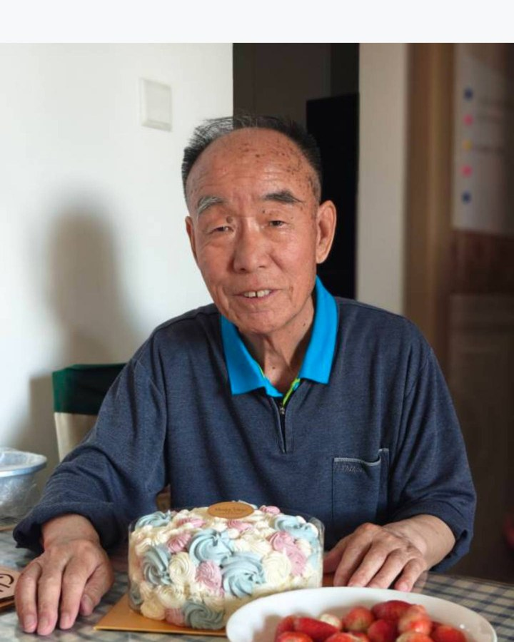
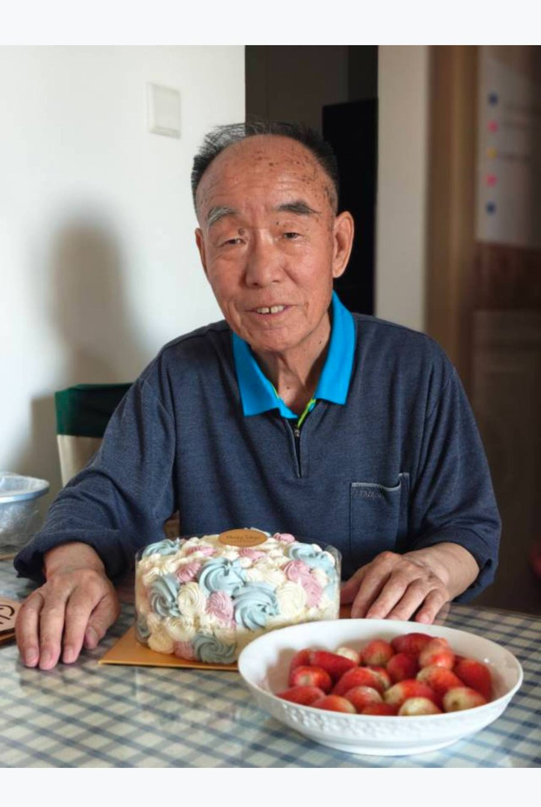

坦荡一生 · 勤勉一世
音容宛在 · 风范长存
景光前，1949年3月出生于陕西省凤翔县。从1966年远赴云南参军并加入中国共产党，到扎根陕西汉中012基地，再到负笄西北工业大学担任研究生党支部书记，他的青春岁月始终与奋斗相伴。1975年学成后返厂任职，他恪尽职守；1992年调入北京长空机械有限责任公司，又在机动处处长的岗位上默默耕耘至2009年退休。
离开工作岗位后的十几年里，他并未停歇，而是将热情倾注于街道社区，无论是站岗巡逻还是清扫楼宇，总能看到他忙碌而快乐的身影。在工作中，他是兢兢业业的实干家；在家里，他是无微不至的好丈夫、好父亲。七十七年人生路，他走得坦荡、活得充实，此生无怨无悔，圆满而无憾。

更多照片与视频，可随时补充进相册